Подборку собрали 8 ноября, прошедшие события скрыты. Свежая афиша — на главной
Афиша на воскресенье, 8 ноября
Куда сходить сегодня в Москве
Воскресенье, 8 ноября. Сегодня в нашей афише 32 события, среди них 17 выставок, 7 спектаклей и 4 вечера стендапа. Если не хочется покупать билеты, у нас 286 готовых планов на вечер: место, ужин рядом и маршрут.
- сегодня: 32 события
- 286 планов
Сегодня, 8 ноября 30 из 32
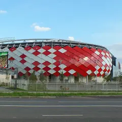
Лукойл Арена · м. Спартак
Воскресный футбол на «Лукойл Арене»: «Спартак» принимает «Акрон». Спокойный повод выбраться на стадион мужской компанией.
Подробнее: Спартак — АкронПозвать сюда: Спартак — АкронБилеты : Спартак — Акрон (страница с билетами, откроется в новой вкладке)
Фото: Brateevsky, CC BY-SA 4.0 · Wikimedia Commons
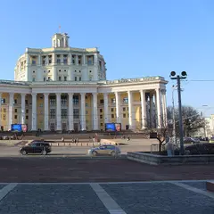
Театр Российской армии, Большая сцена · м. Достоевская · 5 000–44 000 ₽ · 6+
Юбилейная серия сольных концертов: знаменитые песни, новые вещи и разговор с залом о жизни. Вечеров много — до 8 ноября, можно выбрать удобный.
Подробнее: Александр РозенбаумПозвать сюда: Александр РозенбаумБилеты : Александр Розенбаум (страница с билетами, откроется в новой вкладке)
Фото: tiger rus, CC BY 3.0 · Wikimedia Commons
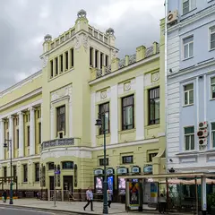
Ленком Марка Захарова · м. Пушкинская · 16+
Трагикомедия Григория Горина о шуте при дворе Петра I, которому позволено говорить правду. Смешно и горько; Балакирев — Сергей Ююкин.
Подробнее: Шут БалакиревПозвать сюда: Шут БалакиревБилеты : Шут Балакирев (страница с билетами, откроется в новой вкладке)
Фото: Никонико962, CC BY-SA 4.0 · Wikimedia Commons
STILL, Большой зал · м. Чистые пруды · от 2 500 ₽ · 18+
Формат без ведущего: на сцену по очереди выходят пять хедлайнеров, и лайнап каждый раз другой. Сеансы в 16:00, 19:00 или 21:30 — смотри по дате.
Подробнее: 5 хедлайнеров за 2500₽Позвать сюда: 5 хедлайнеров за 2500₽Билеты : 5 хедлайнеров за 2500₽ (страница с билетами, откроется в новой вкладке)
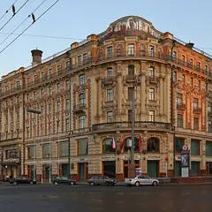
Гастротеатр «Калейдоскоп» · м. Охотный ряд · 18 000–25 000 ₽ · 12+
Гастрошоу у Манежной: два часа путешествия от пирамид Гизы до садов Семирамиды, к каждому чуду — свой сет. Вариант для особого свидания.
Подробнее: 7 чудес светаПозвать сюда: 7 чудес светаБилеты : 7 чудес света (страница с билетами, откроется в новой вкладке)
Фото: A.Savin, CC BY-SA 3.0 · Wikimedia Commons
Стендап клуб на Трубной, Большой зал · м. Трубная · 950–1 500 ₽ · 18+
Фирменный вечер клуба: опытные комики с обкатанным материалом. Показы почти каждый день, по пятницам и субботам — в 19:00 и 21:00.
Подробнее: Биг стендапПозвать сюда: Биг стендапБилеты : Биг стендап (страница с билетами, откроется в новой вкладке)
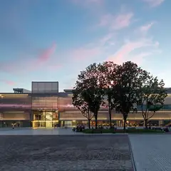
Музей «Гараж», −1 этаж · м. Октябрьская · бесплатно · 12+
Инсталляция-диалог: две лампы общаются вспышками и звуком, а розовая зеркальная комната множит тебя до бесконечности. Вход бесплатный, фото выходят эффектные.
Подробнее: Вадим Фишкин «Словарь воображаемых мест»Позвать сюда: Вадим Фишкин «Словарь воображаемых мест»Билеты : Вадим Фишкин «Словарь воображаемых мест» (страница с билетами, откроется в новой вкладке)
Фото: Garage Museum of Contemporary Art, CC BY-SA 4.0 · Wikimedia Commons
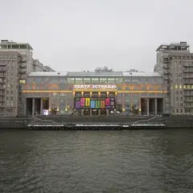
Театр эстрады · м. Кропоткинская · 1 800–20 000 ₽ · 16+
Мюзикл Михаила Миронова на песнях Александра Розенбаума — история длиною в жизнь. Играют почти каждый день до 29 ноября, в выходные дважды.
Подробнее: Вальс-бостонПозвать сюда: Вальс-бостонБилеты : Вальс-бостон (страница с билетами, откроется в новой вкладке)
Фото: ATI1999, CC BY-SA 4.0 · Wikimedia Commons
Музей «Гараж», мезонин · м. Октябрьская · бесплатно · 12+
Можно поиграть в искусство: две 8-битные игры-инсталляции индийской художницы по мотивам советских детских книг. Бесплатно, а рядом Парк Горького.
Подробнее: Видеоигры Афры ШафикПозвать сюда: Видеоигры Афры ШафикБилеты : Видеоигры Афры Шафик (страница с билетами, откроется в новой вкладке)
Фото: Garage Museum of Contemporary Art, CC BY-SA 4.0 · Wikimedia Commons
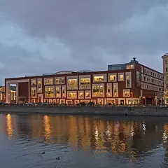
Третьяковка на Кадашёвской · м. Третьяковская · от 450 ₽ · 12+
Больше 140 работ символиста Борисова-Мусатова из двадцати собраний, часть показывают впервые. Мечтательная и очень романтичная живопись.
Подробнее: Виктор Борисов-Мусатов. Гармония образаПозвать сюда: Виктор Борисов-Мусатов. Гармония образаБилеты : Виктор Борисов-Мусатов. Гармония образа (страница с билетами, откроется в новой вкладке)
Фото: Ludvig14, CC BY-SA 4.0 · Wikimedia Commons
МДМ (Московский дворец молодёжи), Большой зал · м. Фрунзенская · от 1 100 ₽ · 12+
Музыкальная комедия на хитах Челентано и итальянской эстрады — лёгкая, как старые кинокомедии. По выходным есть дневные показы.
Подробнее: Всё будет Челентано!Позвать сюда: Всё будет Челентано!Билеты : Всё будет Челентано! (страница с билетами, откроется в новой вкладке)
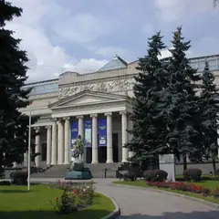
ГМИИ им. А. С. Пушкина, Галерея искусства стран Европы и Америки, зал 16 · м. Кропоткинская
Камерная выставка о французском коллекционере Гюставе Файе, поклоннике Гогена, и его связях с русскими собирателями. Один зал — на час; по понедельникам закрыто.
Подробнее: Гюстав Файе и русские коллекционерыПозвать сюда: Гюстав Файе и русские коллекционерыБилеты : Гюстав Файе и русские коллекционеры (страница с билетами, откроется в новой вкладке)
Фото: Ghirlandajo, CC BY-SA 3.0 · Wikimedia Commons
Манеж · м. Охотный ряд · 680–1 300 ₽ · 0+
Больше 400 снимков дикой природы со всего мира, зал о природе Москвы и макрозона с грибами. Неспешная красивая прогулка в центре, ежедневно 10–21.
Подробнее: Золотая Черепаха. XX Международный фестиваль дикой природыПозвать сюда: Золотая Черепаха. XX Международный фестиваль дикой природыБилеты : Золотая Черепаха. XX Международный фестиваль дикой природы (страница с билетами, откроется в новой вкладке)
Фото: Сергей Секачёв, CC BY-SA 3.0 · Wikimedia Commons
Музей Николая Островского · м. Пушкинская · от 1 200 ₽ · 12+
Головоломки и командные задания в полной темноте — подготовка не нужна, нужна слаженность. Хороший тест для пары или компании.
Подробнее: Игры в темнотеПозвать сюда: Игры в темнотеБилеты : Игры в темноте (страница с билетами, откроется в новой вкладке)
Музей «Гараж», открытое хранение · м. Октябрьская · 12+
Позднесоветские «долгие 80-е»: искусство вместе с телевизором, кино и рок-клубами той поры. Ностальгия для компании; учти, что в залах бывает мигающий свет.
Подробнее: Искусство на частоте 1980-хПозвать сюда: Искусство на частоте 1980-хБилеты : Искусство на частоте 1980-х (страница с билетами, откроется в новой вкладке)
Фото: Garage Museum of Contemporary Art, CC BY-SA 4.0 · Wikimedia Commons
ВДНХ, павильон № 1 «Центральный» · м. ВДНХ · 0+
Около 200 работ о том, как театр и живопись говорят одним языком: Репин, Брюллов, Суриков, Кустодиев и сценические костюмы. Центральный павильон ВДНХ.
Подробнее: Искусство сцены. Академическая живописьПозвать сюда: Искусство сцены. Академическая живописьБилеты : Искусство сцены. Академическая живопись (страница с билетами, откроется в новой вкладке)
Фото: Alexxx1979, CC BY-SA 4.0 · Wikimedia Commons
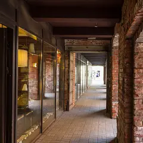
Artplay · м. Чкаловская · от 500 ₽ · 0+
Двухдневная выставка о котах: живопись, скульптура и графика в разных стилях. После можно погулять по дизайн-кварталу.
Подробнее: Кошачья вселеннаяПозвать сюда: Кошачья вселеннаяБилеты : Кошачья вселенная (страница с билетами, откроется в новой вкладке)
Фото: Максим Улитин, CC BY 3.0 · Wikimedia Commons
ГМИИ им. А. С. Пушкина, Галерея искусства стран Европы и Америки · м. Кропоткинская
Кубинские киноафиши и плакаты 1950–70-х — больше 140 листов дерзкой графики. Зайдёт и тем, кто к музеям обычно равнодушен. По понедельникам закрыто.
Подробнее: Кубинский плакат. 1950–1970-е. Кино и революцияПозвать сюда: Кубинский плакат. 1950–1970-е. Кино и революцияБилеты : Кубинский плакат. 1950–1970-е. Кино и революция (страница с билетами, откроется в новой вкладке)
Фото: Ghirlandajo, CC BY-SA 3.0 · Wikimedia Commons
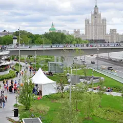
Медиацентр парка «Зарядье» · м. Китай-город · 12+
Выставка памяти одного из первых цифровых художников России: стереопанели, видеоарт и реконструкция мастерской. Логично совместить с прогулкой по Зарядью.
Подробнее: Мастерская новатора. Константин ХудяковПозвать сюда: Мастерская новатора. Константин ХудяковБилеты : Мастерская новатора. Константин Худяков (страница с билетами, откроется в новой вкладке)
Фото: Alina Vozna, CC BY-SA 4.0 · Wikimedia Commons
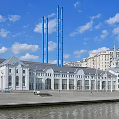
ГЭС-2, галереи С2–С5 · м. Кропоткинская · 12+
Натюрморт, портрет и пейзаж глазами современных художников — сотня работ, десятки авторов. Бесплатный вход — каждую первую среду месяца.
Подробнее: Натюрморт. Портрет. Пейзаж. После жанраПозвать сюда: Натюрморт. Портрет. Пейзаж. После жанраБилеты : Натюрморт. Портрет. Пейзаж. После жанра (страница с билетами, откроется в новой вкладке)
Фото: Юрий Д.К., CC BY 4.0 · Wikimedia Commons
Музей Востока на ВДНХ (павильон № 13) · м. ВДНХ · 0+
Около 250 работ Рериха — от древнерусских мотивов до гималайской серии — плюс тибетские танки и буддийская бронза. Большая выставка в павильоне ВДНХ.
Подробнее: Николай Рерих. Ковчег будущегоПозвать сюда: Николай Рерих. Ковчег будущегоБилеты : Николай Рерих. Ковчег будущего (страница с билетами, откроется в новой вкладке)
Фото: Alexxx1979, CC BY-SA 4.0 · Wikimedia Commons
ЦСИ AZ/ART · м. Китай-город · 0+
Скульптура оттепели в 43 работах: Эрнст Неизвестный, группа ЛЕСС и их современники — и бунтари, и официальные мастера. Небольшая выставка на Маросейке.
Подробнее: Они были разными. Скульптура оттепелиПозвать сюда: Они были разными. Скульптура оттепелиБилеты : Они были разными. Скульптура оттепели (страница с билетами, откроется в новой вкладке)
Навка Арена · м. Терехово · от 4 000 ₽
Ледовый спектакль по Пушкину под музыку Чайковского — мировая премьера Navka Show. Германа играет Никита Кацалапов, Томского — Алексей Ягудин; всего восемь вечеров.
Подробнее: Пиковая дама. Ледовый спектакль Татьяны НавкиПозвать сюда: Пиковая дама. Ледовый спектакль Татьяны НавкиБилеты : Пиковая дама. Ледовый спектакль Татьяны Навки (страница с билетами, откроется в новой вкладке)
Иммерсивный театр «Морфеус» · м. Павелецкая · 3 900–4 900 ₽ · 16+
Иммерсивная комедия с закрытыми глазами: семь зрителей попадают в Москву 1903 года с театральными интригами и кафе. Полтора часа, несколько сеансов в день.
Подробнее: Поезд, Чехов, два орлаПозвать сюда: Поезд, Чехов, два орлаБилеты : Поезд, Чехов, два орла (страница с билетами, откроется в новой вкладке)
Театр на Цветном · м. Трубная · 1 500–7 700 ₽ · 12+
Продолжение комедии «Мамма мимо!»: провинциальной труппе дают сутки на авангардного «Призрака оперы». Пародии на хиты и много смеха.
Подробнее: Призрак мюзикла, или Что опять не так?Позвать сюда: Призрак мюзикла, или Что опять не так?Билеты : Призрак мюзикла, или Что опять не так? (страница с билетами, откроется в новой вкладке)
Центр «Марс» · м. Сухаревская · 0+
Пять залов-стихий — Огонь, Вода, Воздух, Земля и Эфир, — где ты сам часть работы, а нейроинтерфейс превращает концентрацию в рисунок. Есть вспышки и громкий звук.
Подробнее: Сенс. Эволюция стихийПозвать сюда: Сенс. Эволюция стихийБилеты : Сенс. Эволюция стихий (страница с билетами, откроется в новой вкладке)
Театр Маяковского, Основная сцена · м. Арбатская · 1 200–8 000 ₽ · 16+
Чехов у Дениса Хусниярова: старый профессор подводит итоги жизни. В главных ролях Михаил Филиппов и Евгения Симонова. 8 ноября в 18:00, 9 декабря в 19:00.
Подробнее: Скучная историяПозвать сюда: Скучная историяБилеты : Скучная история (страница с билетами, откроется в новой вкладке)
STILL, Большой зал · м. Чистые пруды · от 1 080 ₽ · 18+
Вечер в двух актах: сначала живой джаз, затем стендап от трёх комиков, каждый раз в новом составе. В пятницу начинают в 21:30, в другие дни — в 18:30.
Подробнее: Стендап + джаз: два концерта в один вечерПозвать сюда: Стендап + джаз: два концерта в один вечерБилеты : Стендап + джаз: два концерта в один вечер (страница с билетами, откроется в новой вкладке)
StandUp Cafe, Большой зал · м. Чистые пруды · от 1 190 ₽ · 18+
Свечи, комики и виолончели: между выступлениями звучат AC/DC, Nirvana и Muse в струнной версии. Около полутора часов; по воскресеньям начало в 16:30.
Подробнее: Стендап при свечах + Мировые рок-хиты на виолончелиПозвать сюда: Стендап при свечах + Мировые рок-хиты на виолончелиБилеты : Стендап при свечах + Мировые рок-хиты на виолончели (страница с билетами, откроется в новой вкладке)
ГМИИ им. А. С. Пушкина, Главное здание, зал 31 · м. Кропоткинская
Видеоинсталляция итальянского классика медиаискусства о воде в зале главного здания. Медитативная пауза перед прогулкой; в понедельник музей закрыт.
Подробнее: Фабрицио Плесси. Вертикальные моряПозвать сюда: Фабрицио Плесси. Вертикальные моряБилеты : Фабрицио Плесси. Вертикальные моря (страница с билетами, откроется в новой вкладке)
Фото: Ghirlandajo, CC BY-SA 3.0 · Wikimedia Commons
Планы на вечер без билетов 12 из 286
- Ростокинский акведук · Акведук XVIII века · м. ВДНХ
- 12 минут пешкомИнкубо · Квест с актёрами
В сумерках пройти вдоль каменного Ростокинского акведука 1780-х, а потом хоррор в «Инкубо» — «Пожиратель душ» или неоновая «Ночь в Токио» с сильными актёрами.
Открыть план: Акведук в сумерках и хоррор-квестПозвать сюда: Акведук в сумерках и хоррор-квест
Фото: Dmitry Ivanov., CC BY-SA 4.0 · Wikimedia Commons
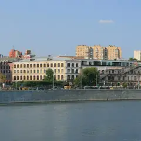
- Краснопресненские бани · Баня и хамам · м. Улица 1905 года
- 13 минут пешкомРаковарня · Раки и караоке
Финская сауна, хамам и бассейн в Краснопресненских банях, а потом через Трёхгорку в «Раковарню» — раки, морепродукты и караоке до шести утра.
Открыть план: Баня на Пресне и ракиПозвать сюда: Баня на Пресне и раки
Фото: Ludvig14, CC BY-SA 4.0 · Wikimedia Commons
- Смотровая iCITY · Бесплатная смотровая и коворкинг · м. Шелепиха
- 18 минут пешкомBamboo.Bar · Ресторан с террасой
Встретить закат на бесплатной круговой смотровой iCITY, а потом спуститься в квартал на террасу Bamboo.Bar с зеленью и фонтанами — удобно прямо после работы.
Открыть план: Бесплатная смотровая и терраса в СитиПозвать сюда: Бесплатная смотровая и терраса в Сити
Фото: kishjar?, CC BY 2.0 · Wikimedia Commons
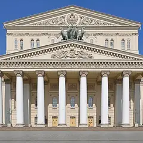
- Большой театр · Театр · м. Охотный ряд
- 4 минуты пешкомМетрополь · Ресторан в историческом отеле
Спектакль на главной сцене страны, а через Театральную площадь — ужин в парадном зале «Метрополя» под витражным куполом с фонтаном.
Открыть план: Большой театр и ужин под куполомПозвать сюда: Большой театр и ужин под куполом
Фото: Юрий Д.К., CC BY 4.0 · Wikimedia Commons
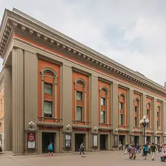
- Театр Вахтангова · Театр · м. Смоленская
- 15 минут пешкомПанорама · Панорамный ресторан
Спектакль в Театре Вахтангова на Арбате, потом минут пятнадцать пешком до Смоленской — и ужин на 23-м этаже, где за окнами высотка МИД и огни Сити.
Открыть план: Вахтангов и ужин на 23-м этажеПозвать сюда: Вахтангов и ужин на 23-м этаже
Фото: A.Savin, Free Art License · Wikimedia Commons
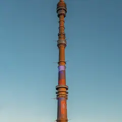
- Останкинская башня · Смотровая площадка · м. Бутырская
- 4 минуты пешкомСедьмое небо · Ресторан на телебашне
Сначала смотровая Останкинской башни со стеклянным полом, потом столик во вращающемся «Седьмом небе»: пока ужинаете, под вами медленно проплывает вся Москва. Билеты и бронь — заранее.
Открыть план: Годовщина на 337 метрахПозвать сюда: Годовщина на 337 метрах
Фото: Klodklodklod77, CC BY-SA 4.0 · Wikimedia Commons
- ГЭС-2 · Дом культуры · м. Кропоткинская
- 4 минуты пешкомKaraoke Pro · Караоке-клуб
Бесплатные выставки ГЭС-2, а потом через дорогу Karaoke Pro: акустика Nexo, барабаны и бэк-вокал, в пятницу — живая группа. Открыто с четверга по субботу с 20:00.
Открыть план: ГЭС-2 и караоке с живой группойПозвать сюда: ГЭС-2 и караоке с живой группой
Фото: Юрий Д.К., CC BY 4.0 · Wikimedia Commons
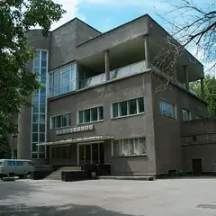
- Культурный центр ЗИЛ · Культурный центр · м. Автозаводская
- 13 минут пешкомStrEAT · Фудхолл
Лекция или кино в конструктивистском ДК ЗИЛ, а потом фудхолл StrEAT в корпусе завода «Динамо»: дагестанские хинкалы или баббл-ти — каждый берёт своё.
Открыть план: ДК ЗИЛ и уличная едаПозвать сюда: ДК ЗИЛ и уличная еда
Фото: NVO, CC BY-SA 3.0 · Wikimedia Commons
- Comedy Hall · Стендап-клуб · м. Павелецкая
- 9 минут пешкомCity Space · Панорамный бар
«Женский стендап» в Comedy Hall у Павелецкой — комикессы и кавер-группа на разогреве, — а потом круглый бар City Space на 34-м этаже с видом на реку.
Открыть план: Женский стендап и бар на 34-м этажеПозвать сюда: Женский стендап и бар на 34-м этаже
Фото: Artyom Svetlov, CC BY 4.0 · Wikimedia Commons
- Ведогонь-театр · Театр · Зеленоград — Крюково (МЦД-3)
- 12 минут пешкомGoodson bar · Коктейльный бар
Комедия в «Ведогонь-театре» с сильной труппой и билетами от 600 ₽, а потом хайболы и джин-тоник в бутылочке в Goodson bar.
Открыть план: Зеленоград: комедия и хайболыПозвать сюда: Зеленоград: комедия и хайболы
Фото: Perituss, CC BY-SA 3.0 · Wikimedia Commons
- Ведогонь-театр · Театр · Зеленоград — Крюково (МЦД-3)
- 16 минут пешкомZiamo · Ресторан
Спектакль в «Ведогонь-театре» после реставрации, а потом ужин в Ziamo под живой джаз или соул — осьминог и авторские десерты.
Открыть план: Зеленоград: театр и джаз за ужиномПозвать сюда: Зеленоград: театр и джаз за ужином
Фото: Perituss, CC BY-SA 3.0 · Wikimedia Commons
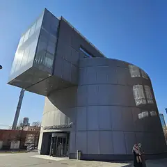
- Музей русского импрессионизма · Музей · м. Белорусская
- 1 минута пешкомБольшевик Лофт · Ресторан со стендапом
Коровин, Серов и Кустодиев в Музее русского импрессионизма, а в соседнем краснокирпичном корпусе бывшей фабрики «Большевик» — ужин и стендап в Большевик Лофт.
Открыть план: Импрессионисты и стендап на фабрикеПозвать сюда: Импрессионисты и стендап на фабрике
Фото: Sergey A. Demidov, CC BY 4.0 · Wikimedia Commons


Как позвать
- Выбери план, место или событие — в карточке адрес, цены и маршрут в Яндекс Картах.
- Нажми «Позвать сюда» — соберётся приглашение-игра для свидания или голосование для компании.
- Отправь ссылку в любой мессенджер: тебе ответят, а компания отметит, куда и когда может. Бесплатно и без регистрации.